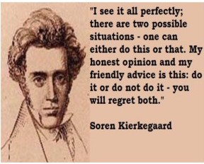

1841 Ludwig Feuerbach: “Religion prevents one from grappling with the reality of life.” God is a creation of the human imagination; we attribute to God crucial aspects of our own humanity, alienating ourselves from our true essence, masking and exacerbating fundamental forces of alienation and suffering; we must overcome belief in God and recover our own essence. Reality is ultimately material; Hegel's highest realities (self-consciousness, reason, and spirit) are aspects of humanity alienated by religion. We must renounce a god that requires exclusive faith commitments that separate us from other human beings, to come to a sense of ourselves again.

1843 Kierkegaard: Abraham's killing of Isaac is a teleological suspension of the ethical by the spiritual, like that of Iphigenia, a murder of innocence for the greater good. His Night of Infinite Resignation stresses giving up this world in favor of the next (pandering to the hope of immortality). He posits faith by virtue of the Absurd - a leap of faith, but not blind faith - a human heart risking all, without justification, trusting in God's love. He attacks modern efforts to make Christianity reasonable; faith is only realized in passionate commitment. Faith is the struggle of a lifetime, an encounter with the creative source of life. Abraham's sacrifice of Isaac is murder, an act of faith, an act of infinite resignation, which views things of this world as unimportant compared with things eternal. Abraham has faith through the Absurd idea that he will get Isaac back. Kierkegaard's paradox: God's is transcendent; faith itself is a gift from god, that reason cannot grasp, so reason resents it, and because of sin cannot accept it.
An encounter with Jesus the teacher grants us the condition of acceptance and salvation. Religious truth comes to us from outside; salvation is not available except through Jesus. As sinners, we don't want to see it; our reason is offended, but God is absolutely different, while reason wants to domesticate God. Reason must recognize and accept its limits and surrender to the paradox. [Yet faith is likewise bound up with pride, and refuses to recognize a law outside itself - reason. Also, as long as we’re surrendering to paradoxes, how do we know which one? Doesn’t Islam or any cult leader make exactly the same claim that since reason can't arrive at their predetermined conclusion, we must abandon reason and “take the leap of faith and trust that God will catch you”? Of course, our “God-given” reason recoils at anything so monstrous as murdering one’s own child.]
1844 The YMCA is founded in London to put Christian principles into practice by developing a healthy "body, mind, and spirit."
~~~~~~~~